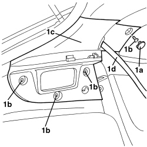
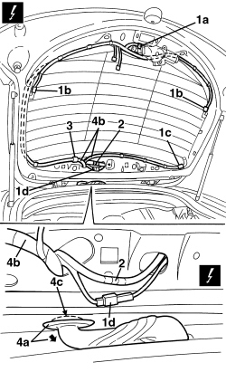
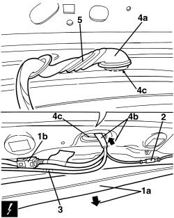

5505B55 TAILGATE WIRING - R.R.
- Path
- Procedures > 55 ELECTRICAL EQUIPMENT > 5505 INSTRUMENT/GAUGE ELECTRICAL CIRCUITS > 5505B DOOR, BOOT AND BONNET WIRING > 5505B55 TAILGATE WIRING - R.R.
- Kind
- repair procedure (removal / refitting; the operation number is the code)
- Applies to
- all engines; all production periods
- Interactive page
- https://sloeber94.github.io/elrnDB-aBrrSpdr/en/#/946002340
Applies to: all engines; all production periods
 Removing
Removing
 Refitting
RefittingOp. 7015A05 TAILGATE LOWER INTERIOR PANEL-R R
Op. 7015A06 TAILGATE UPPER INTERIOR PANEL - R.R.
Op. 7015B10 SINGLE TAILGATE LOCK - R+R OR REPAIR WITH PANEL/PROTECTION REMOVED
- Remove both the pillar trims.
Op. 7040H38 CENTRE PILLAR UPPER ELEMENT (ONE), LEFT OR RIGHT - R.R
- Remove the rear parcel shelf.
Op. 7040G30 BOOT LIGHT BULB HOLDER - R.R.
1. Working on the left and right rear pillar trims, release the bolt covers (1a).
Undo the bolts (1b).
Move and lower the pillar trims (1) without releasing them from the seat belts (1d).

Applies to: all engines; all production periods
- Release the door housing seals in the roof lining area.
1. Disconnect the electrical connections (1a, 1b, 1c, 1d).
Description | Component |
|---|---|
REAR WIPER MOTOR | |
HEATED REAR WINDSCREEN | |
ADDITIONAL REAR LIGHT (THIRD BRAKE LIGHT) |
2. Disconnect the rearscreen washer fluid pipe.
3. Disconnect the wiring retainers.
4. Disconnect the duct seal (4a) and extract the wiring (4b) from the tailgate, passing it through the opening (4c).

Applies to: all engines; all production periods
1. Gently lower the roof lining (1a) slightly and disconnect the electrical connection (1b).
Description | Component |
|---|---|
REAR/TAILGATE COUPLING |
2. Disconnect the radio aerial connection.
3. Disconnect the rearscreen washer fluid pipe.
4. Disconnect the duct seal (4a) and extract the wiring/pipe (4b) from the bodyshell, passing it through the opening (4c).
5. Keep the wiring built into the tailgate.

Applies to: all engines; all production periods
Refitting
Removing- Check that the wiring is not damaged and that the individual conducts are correctly fastened to the connections.
- If necessary, carry out continuity tests.
- Position the wiring and the duct seal.
- Connect the rearscreen washer fluid pipe.
- Connect the electrical connections.
- Secure the wiring to the retainers.
- Reposition the roof lining and fit the door housing seals.
- Position the rear pillar trims and secure them using the bolts; fit the bolt covers.
Op. 7040G30 BOOT LIGHT BULB HOLDER - R.R.
Op. 7040H38 CENTRE PILLAR UPPER ELEMENT (ONE), LEFT OR RIGHT - R.R
Op. 7015B10 SINGLE TAILGATE LOCK - R+R OR REPAIR WITH PANEL/PROTECTION REMOVED
Topics linked from this page (9)
- 7015A05 TAILGATE LOWER INTERIOR PANEL-R R
- 7015A06 TAILGATE UPPER INTERIOR PANEL - R.R.
- 7015B10 SINGLE TAILGATE LOCK - R+R OR REPAIR WITH PANEL/PROTECTION REMOVED
- 7040G30 BOOT LIGHT BULB HOLDER - R.R.
- 7040H38 CENTRE PILLAR UPPER ELEMENT (ONE), LEFT OR RIGHT - R.R
- D085 REAR/TAILGATE COUPLING
- F040 ADDITIONAL REAR LIGHT (THIRD BRAKE LIGHT)
- N016 REAR WINDOW WIPER MOTOR
- P055 HEATED REARSCREEN